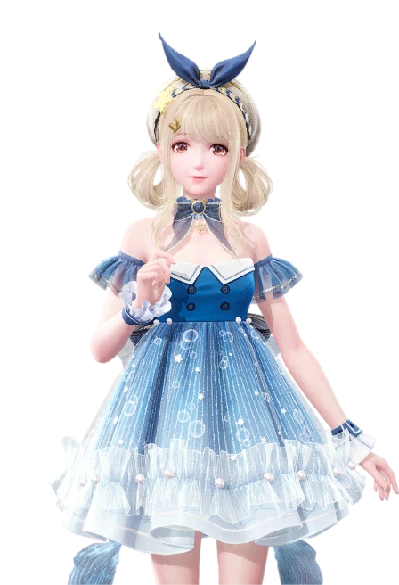

Infinity Nikki is a cross-platform open-world dress-up adventure game developed by Papergames.
The game features dress-up mechanics with open-world exploration elements.
Clothing sets known as Ability Outfits grant unique abilities which help the player explore the world, overcome challenges, and gather materials. Gameplay also features platforming, puzzle-solving,
life simulation, crafting, and minigames.
Without further ado, here is the table:
Grade
Outfit
Why
Picture + Type
B
Bubbly Voyage
A classic, and the bubble theme fits the "floating" part of the outfit. Little lower because it's basic

Floating outfit
A
Timeless Melody
So so so beautiful, looks like a porcelain doll and has a key at the back :O.
Colors are a bit muted but ah well
Purification Outfit
B+
Shark Mirage
Love the colors and the details, her hat gives off witchy vibes.
Almost makes me forgive the amount of time I needed to get the full outfit.
Fishing Outfit
Hope you enjoyed :) Have some other things I like in Infinity Nikki: